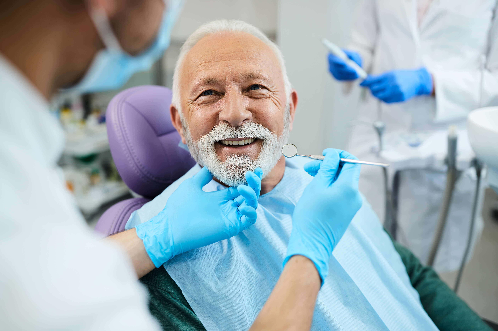

Investing in Lifelong Dental Health: The Importance of Annual Dental Check-Ups
Our smiles bring boundless joy, confidence, and well-being into our lives. As responsible individuals, it is our duty to ensure our dental health by prioritising preventive care, and a crucial aspect of this care is the Annual Dental Check-Up. This routine examination serves as a cornerstone in maintaining your dental health and happiness.
1. Early Detection of Health Issues
Annual Dental Check-Ups provide dentists with the opportunity to detect potential health issues early on. Just as regular doctor visits are vital for humans, routine check-ups for dental health allow dentists to identify and address emerging health concerns before they escalate. Early detection often leads to more effective treatments and a higher chance of successful outcomes.
2. Preventive Care
Regular cleanings and check-ups are a fundamental component of the Annual Dental Check-Up. These preventive measures protect you from serious, and sometimes life-threatening, dental diseases. Additionally, preventive measures such as X-rays and dental check-ups contribute significantly to your overall well-being.
3. Tailored Nutritional Guidance
Individuals, like humans, have unique dietary needs at different stages of their lives. The Annual Dental Check-Up provides an opportunity for dentists to assess your nutritional requirements and offer guidance on a diet that supports your dental health and vitality.
4. Dental Health Evaluation
Oral health is often overlooked, yet it plays a crucial role in your overall health. During the check-up, dentists examine the condition of your teeth and gums, addressing any signs of dental disease. Good oral hygiene can prevent a range of health issues and contribute to a longer, healthier life.
5. Holistic Well-Being
Beyond addressing specific health concerns, Annual Dental Check-Ups contribute to the holistic well-being of your dental health. A dentist’s expertise can guide you in providing the best environment, oral hygiene routine, and mental stimulation for your dental health, ensuring overall happiness and quality of life.
6. Addressing Behavioural Changes
Individuals, like humans, can experience changes in behaviour that may indicate underlying health issues. Annual Dental Check-Ups offer an opportunity to discuss any behavioural changes with your dentist, allowing for early intervention and tailored solutions.
To sum up, investing in the Annual Dental Check-Up is an investment in your lifelong health and happiness. This proactive approach to dental care not only safeguards against potential health issues but also strengthens the bond between you and your dentist. Schedule your Annual Dental Check-Up today and embark on a journey of comprehensive care that ensures a vibrant and fulfilling life for your dental health.